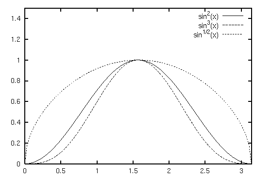
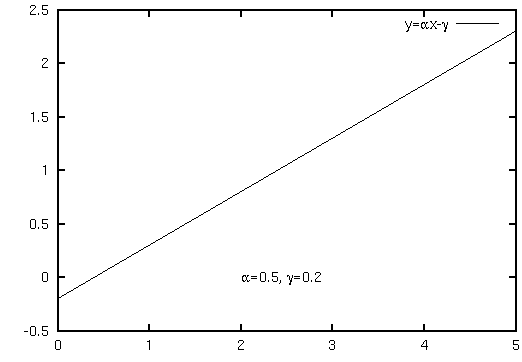

- not so Frequently Asked Questions -
update 2004/9/5
|
|
- not so Frequently Asked Questions - update 2004/9/5
|
|
not so FAQ |
About Label (No.1)I want to use super/subscripts in a text.The enhanced postscript terminal can display super- / sub-script in the labels or axis names. To use this termianl one needs "enhanced" option: gnuplot> set terminal postscript enhanced You can write the supersript as X^2, and the subscript is Y_3. To make several letters super- / sub-script, you need brace like Z_{64}. To use super and subscripts at the same time, try Z@^2_{64}. The following is an example to make legends with the superscripts. The functions are y=sin**2(x), y=sin**3(x), and y=sqrt(sin(x)).
gnuplot> set terminal postscript eps enhanced
gnuplot> set key spacing 1.3
gnuplot> set xrange [ 0 : pi ]
gnuplot> set yrange [ 0 : 1.5 ]
gnuplot> plot sin(x)**2 ti "sin^2(x)", \
sin(x)**3 ti "sin^3(x)",\
sqrt(sin(x)) ti "sin^{1/2}(x)"

When texts in the legend contain super- / sub-scripts, text lines become very close each other. In the example above, the baseline skip was increased to 30% by set key spacing 1.3 .  I want to use Greek letters in a text.To use Greek letters in a text, you may try using enhanced postscript terminal just like the case of super- / sub-scripts. gnuplot> set terminal postscript enhanced The Greek letters can be displayed by {/Symbol a}. This gives "alpha" which corresponds to "a". The relation of the Symbol and alphabet is as follows.
You can also specify various postscript characters by octal codes, for example, {/243} is a pound (L) mark, {/247} is a section mark. See ps_guide.ps which comes with gnuplot source distribution in detail. The next example is to draw the linear function y=Alpha x+ Gamma and two Greek letters with those values in the figure.
gnuplot> set terminal postscript eps enhanced
gnuplot> set xrange [ 0 : 5 ]
gnuplot> set label "{/Symbol a}=0.5, {/Symbol g}=0.2" at 2,0
gnuplot> plot 0.5*x-0.2 ti "y={/Symbol a}x-{/Symbol g}"

How do I adjust an interval between X,Y axes and their labels ?The interval can be controlled by the ofset options of set {x|y}label command. gnuplot> set xlabel "x" 0.0,1.0 This moves the X-axis label one letter upward. When you give a positive Y ofset, the X label gets into the graph. While the ofset is negative, distance between the X label and the graph becomes larger. Gnuplot tries to draw a graph as large as possible, so the graph hight becomes larger when the X-axis label moves upward. On the contrary the graph becomes small when the X-axis goes downward.
To adjust the Y-axis label, use set ylabel "Y-AXIS" +n,+m where "+n" and "+m" are the Y-axis ofset options. The following examples are to set the X ofset "+5" and "-5". This affects the width of the graph.
|